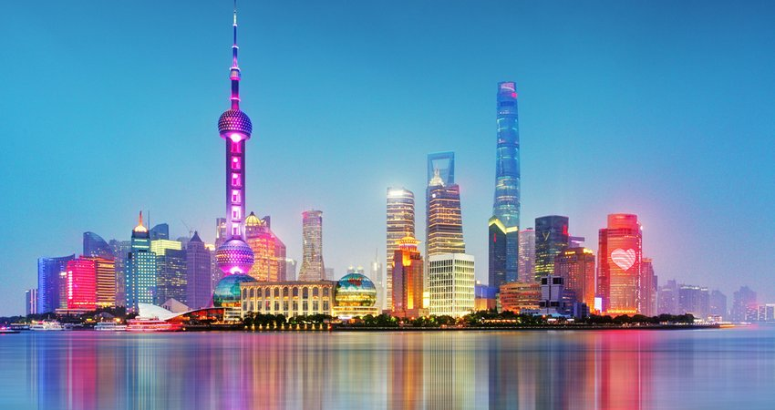
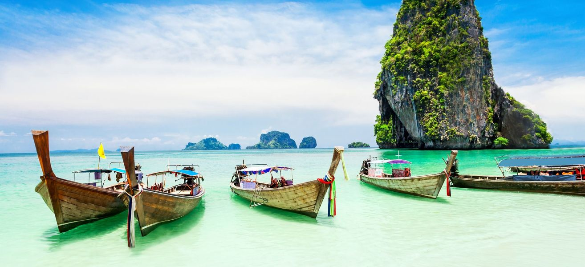
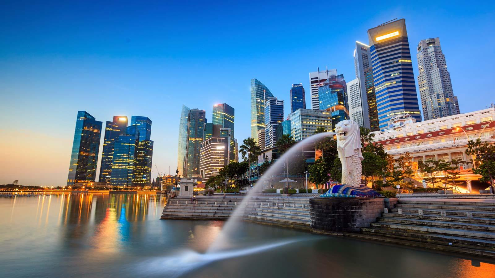

1. Bali
.....
A trip to Bali can be filled with culture, nature, art, the spiritual or, even better, all of these. Apart from the wealth of Bali attractions, from the spectacular beaches of Kuta, Nusa Dua and Seminyak, or Ubud’s cultural heart and picturesque terraced rice fields, the northeastern coastal towns and Lombok Island are hidden gems awaiting discovery. The west coast of Bali is still off the beaten path, with tapering ranges of mountains covered in lush forests, wet rice fields and bountiful vegetation. Bali attractions also comprise historical sites and buildings that stand the tests of time, and a range of museums and art galleries all offer a different glimpse of Bali, be it for the curious traveller or honeymooners looking for their memorable scene in Bali

2. Shanghai
.....
Shanghai, China's largest city, offers many exciting sightseeing opportunities for those unconcerned with having to deal with large crowds. But despite having a population of more than 24 million, this fun city also offers quieter historic districts and attractions alongside its many newer tourist sites. One of the world's busiest container ports thanks to its position at the mouth of the Yangtze River, the city also provides opportunities for exploration by water along the Chinese coast and its inland waterways. Highlights of a visit include a number of world-class museums and art galleries such as the Shanghai Museum and the China Art Museum, numerous lovely gardens and parks, and many fine old temples and traditional pagodas.
3. Phuket
.....
There are plenty of really memorable things to do in Phuket. The island itself has a beautiful historical old town, great viewpoints and iconic cultural attractions. It is also a good base for exploring the nearby islands and must-see attractions. These include world-famous places like Phang Nga Bay and the Phi Phi Islands.
4. Singapore
.....
Singapore has been described as a playground for the rich, and it's true that the small city-state does have a certain sheen of wealth. But Singapore offers more than just high-end shopping malls, luxury hotels, and fine dining (though it's worth indulging in those a bit if you can). There is also a vibrant history and diverse ethnic quarters to discover, along with the many family-friendly attractions and lovely public spaces that make visiting this slightly futuristic city worthwhile.
5. Tokyo
.....
Tokyo, the capital city of the parliamentary democratic monarchy of Japan, is also home to the Emperor's Palace and the seat of Government and Parliament. In East-Central Honshu, the largest of Japan's main islands, this heavily populated city is well worth exploring. One of the world's most modern cities in terms of its infrastructure and design - due largely to the 1923 earthquake and the devastation of WWII - Tokyo also holds the title of the world's most expensive city in which to live (it's also one of the easiest to get around thanks to its superb rail and subway networks).